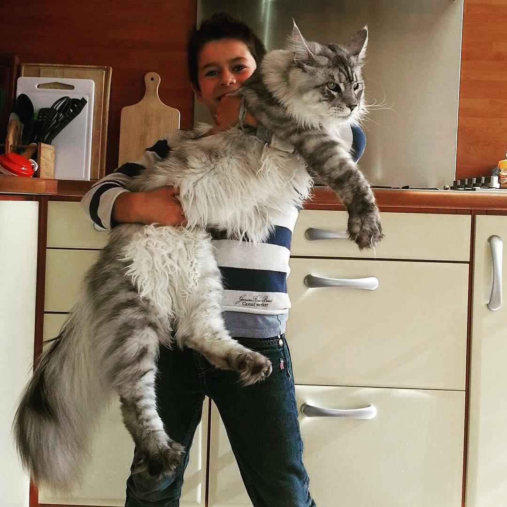

Er Maine Coon i familie med vaskebjørnen, og var det vikingerne, der bragte den til Maine i USA? Her er 10 fakta om den majestætiske katterace, der kan se frygtindgydende ud, men i virkeligheden er en af de mest kærlige katte.

Der er stor forskel i størrelse på kønnene. En fuldvoksen hun vejer typisk 4-6 kg, hanner 6-9 kg, men nogle eksemplarer kan veje over 15 kg. Længden kan nå op til 123 cm.
Selvom de kan virke store og imponerende, er Maine Coons meget kærlige, omgængelige og passer godt med børn og andre dyr. De omtales ofte som “hunden blandt katte”.
Pelsen er lang med flere lag, poterne store til sne, og halen busket – perfekt som varme-svøb. Hårene omkring ørerne beskytter mod kulde, og poterne bruges som hænder til at samle ting op.
Racens navn stammer fra Maine i USA, hvor racen er fra. "Coon" kommer af raccoon (vaskebjørn), da folk troede katten var beslægtet med vaskebjørne. Der findes også myter om Marie Antoinette og vikingerne.
Maine Coon har genetiske slægtninge i Norsk Skovkat, og racen kan derfor have “vikingeblod”.
I slutningen af 18-tallet var Maine Coon populær, men i begyndelsen af 19-tallet gik den af mode. I 1950’erne var racen næsten uddød, men i dag er den udbredt i USA og Danmark.
En Maine Coon kan koste fra 3.000-5.000 kr. for en kælekat med stamtavle, og dyrere hvis den deltager i udstillinger.
Maine Coons er fascinerede af vand – de kan svømme, lege med vand og er nysgerrige omkring vandkilder, hvor andre katte normalt holder sig væk.
Nogle Maine Coons har polydaktyli – 6 tæer på poterne. Tidligere var det op til 40 %, men nu er det sjældnere. Ekstra tæer diskvalificerer dog ikke katten fra konkurrencer.
Maine Coons kurrer som duer og har et større repertoire af lyde end almindelige katte. Den længste kat nogensinde, Stewie, var en Maine Coon på 123 cm, og den tungeste vejede 15,9 kg.